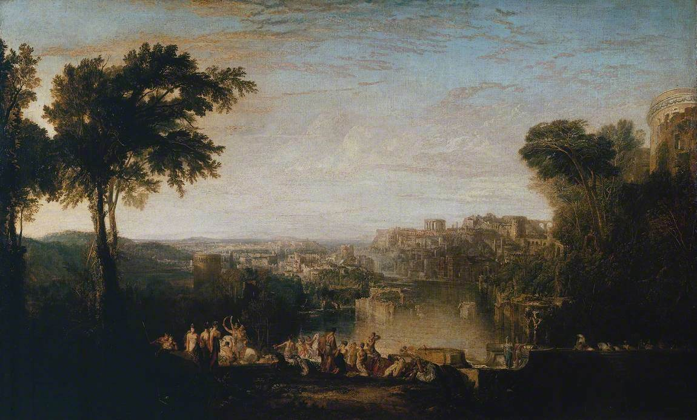

Энеида · песнь 4 из 12
Дидона

Кратко
Дидона признаётся сестре Анне в любви к Энею, хотя поклялась праху первого мужа Сихея не выходить замуж вновь; Анна убеждает её, что для города и её собственного одиночества такой брак был бы благом. На охоте гроза загоняет пару в одну пещеру, и Дидона отныне считает случившееся там браком, хотя Эней никак не объявляет об этом. Молва (Фама) — чудовище с бесчисленными глазами, языками и ушами — тут же разносит слух по всей Африке; отвергнутый царь гарамантов Ярба, сын самого Юпитера Аммона, в ярости взывает к отцу. Юпитер посылает Меркурия напомнить Энею о судьбе: не царём-консортом в Карфагене, а основателем государства в Италии ему суждено стать. Эней тайно готовит отплытие; узнав об этом, Дидона в отчаянии и ярости осыпает его упрёками, но слышит в ответ лишь то, что он подчиняется воле богов, а не своей. Притворившись, что готовит колдовской обряд для забвения любви, она возводит костёр из его вещей и после ухода флота бросается на его меч; сестра Анна и весь дворец оплакивают её, а милосердная Юнона посылает Ириду обрезать прядь волос умирающей, чтобы облегчить её невольную, безвременную смерть. Перед концом Дидона успевает проклясть Энея и весь его будущий род — пророчество войн Рима с Карфагеном.
Главные моменты
- Дидона нарушает клятву праху Сихея — первый шаг к трагедии сделан ею самой.
- Пещера и буря — «свадьба», которую одна сторона считает священной, а другая нет.
- Молва (Фама), чудовище с сотней языков, разносит слух по всей Африке.
- «Не своей волей ищу я Италию» — Эней прячется за волей богов перед лицом её горя.
- Мнимый колдовской обряд оборачивается настоящим погребальным костром.
- Проклятие Дидоны — прямое пророчество будущих Пунических войн Рима с Карфагеном.
Значение
Самая трагическая песнь поэмы: личное счастье и чужая клятва принесены в жертву государственной судьбе, и цена показана без прикрас.